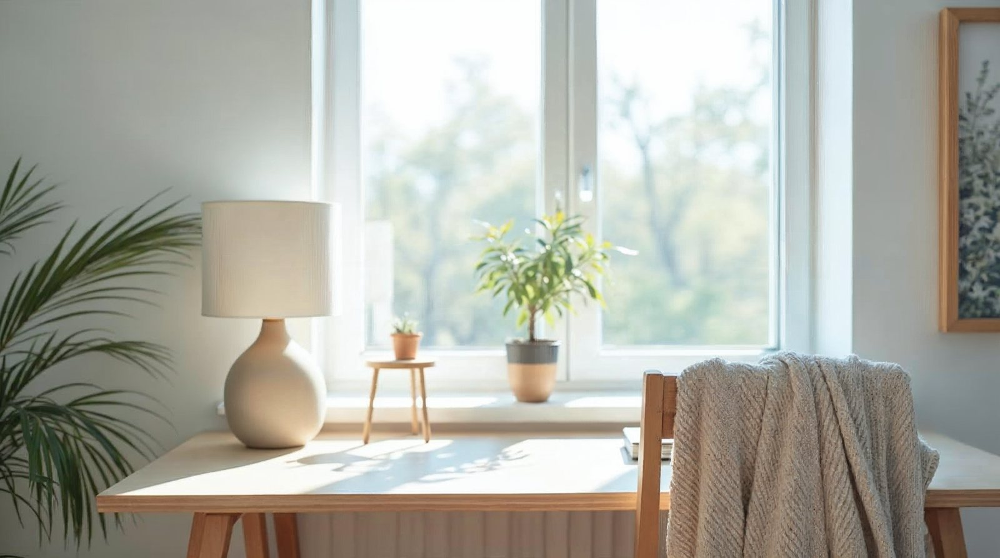
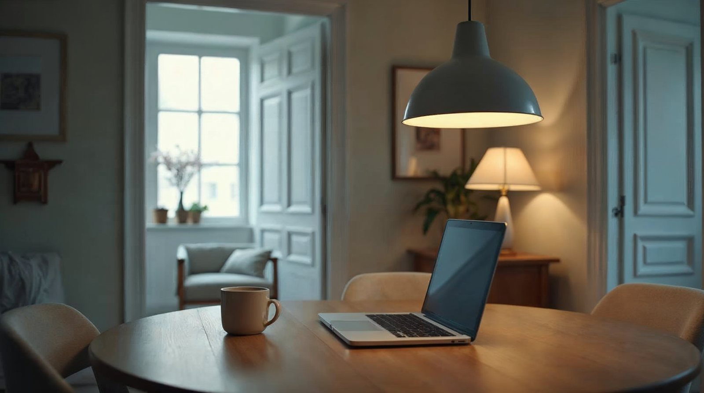
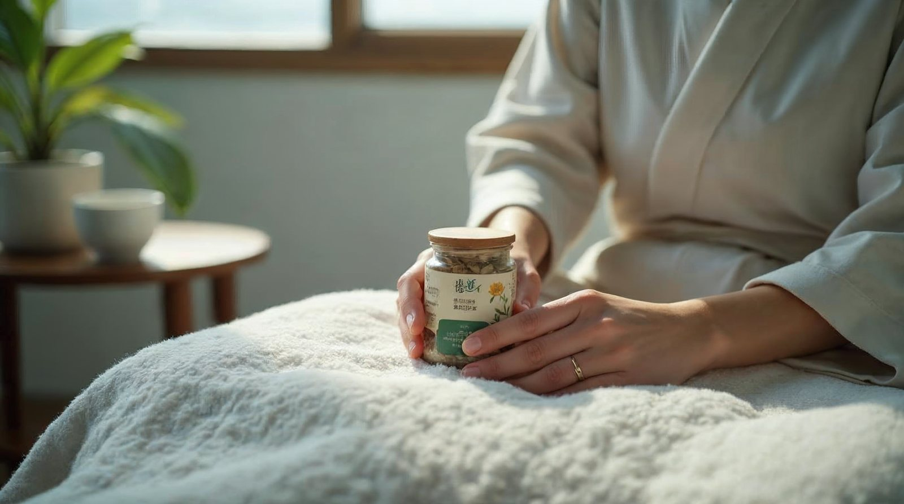
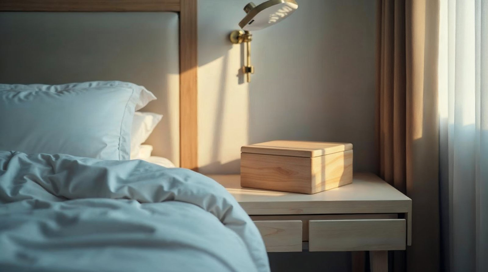
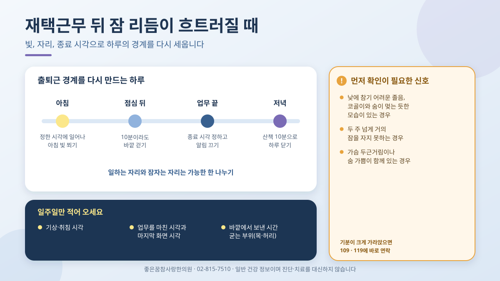

이종호 한의사 감수좋은꿈참사랑한의원 대표원장 (한의사 면허번호 19769)발행 2026-11-23 · 수정 2026-11-26
이 글의 차례
- 왜 이런 불편이 생길 수 있나요
- 왜 출근길이 사라지면 잠이 밀리기 쉬울까요
- 재택근무 때문인지, 다른 원인이 겹친 것인지 어떻게 구분하나요
- 먼저 이렇게 여쭙니다
- 일상에서 먼저 해 볼 수 있는 것
- 하루를 여닫는 의식은 어떻게 만들까요
- 일하는 자리, 이렇게 점검해 보세요
- 상황별 예시
- 스스로 점검해 보세요
- 출근과 재택이 섞인 주에는 어떻게 맞출까요
- 혼자 일하는 날이 길어질 때 마음은 어떻게 돌볼까요
- 식사와 카페인은 어떻게 챙기면 좋을까요
- 저녁 화면 시간은 어떻게 줄일 수 있을까요
- 잠 기록은 이렇게 적어 보세요
- 한의원에서 함께 살필 수 있는 경우
- 상담 전에 알아 두시면 좋은 것
- 얼마나 지켜보고 언제 상담할까요
- 이렇게 기록해 오시면 상담이 쉬워집니다
- 이런 증상은 먼저 확인이 필요합니다
- 관련 글
출근 준비라는 신호가 사라지면서 아침이 늦어지고 밤이 길어졌다는 분이 있습니다. 노트북을 덮는 시각이 매일 달라지고, 업무 메신저를 침대에서 확인하는 날도 늘어납니다. 하루의 경계를 다시 세우는 작은 습관이 잠의 리듬을 되돌리는 출발점입니다.
왜 이런 불편이 생길 수 있나요
- 아침에 바깥 빛을 받는 시간이 줄면 몸의 시계가 늦어져 밤에 졸음이 늦게 옵니다.
- 일하는 자리와 쉬는 자리가 같으면 누워서도 일 생각이 쉽게 떠오릅니다.
- 출퇴근 걸음이 사라져 낮 활동량이 줄면 밤에 몸이 덜 피곤할 수 있습니다.
- 업무 종료 시각이 흐려지면 늦은 밤까지 화면을 보게 되고, 밝은 빛이 졸음을 더 늦춥니다.
- 식사 시각이 들쑥날쑥해지고 늦은 야식이 늘면 잠들기 전 속이 무거워 잠이 얕아질 수 있습니다.
왜 출근길이 사라지면 잠이 밀리기 쉬울까요
출근길은 그저 이동하는 시간이 아니었습니다. 정해진 시각에 일어나 씻고 옷을 갈아입고, 바깥 빛을 받으며 걷는 일련의 과정이 몸에 '이제 하루가 시작됐다'는 신호를 보내고 있었던 셈입니다. 이 신호가 사라지면 몸의 시계는 조금씩 뒤로 밀리기 쉽습니다.
퇴근길도 마찬가지입니다. 회사를 나서 지하철을 타고 집 앞에 도착하는 동안 머리는 일에서 집으로 천천히 넘어옵니다. 재택근무에서는 노트북을 덮는 순간 바로 거실이고, 일의 긴장이 식을 틈이 없어 누운 뒤에도 업무 생각이 이어지기 쉽습니다.
여기에 하루 걸음 수가 크게 줄면 몸이 덜 지쳐 졸음이 늦게 오고, 화면 앞에 앉아 있는 시간이 길어지면 밤까지 밝은 빛을 보게 됩니다. 이런 작은 변화들이 겹쳐 잠드는 시각이 30분, 한 시간씩 늦어지는 경우가 많습니다.
재택근무 때문인지, 다른 원인이 겹친 것인지 어떻게 구분하나요
- 재택근무를 시작한 시점과 잠이 밀리기 시작한 시점이 비슷하고, 출근하는 날에는 잠이 한결 편하다면 하루의 경계가 흐려진 것이 중심일 수 있습니다.
- 출근하는 날에도 잠들기 어렵다면 업무의 양이나 마음의 부담처럼 다른 이유가 함께 있는지 살펴봅니다.
- 혼자 사는 집에서 며칠씩 사람을 만나지 않는 날이 이어지고 기분까지 처진다면, 잠과 함께 외로움과 무기력도 함께 들여다봅니다.
- 목과 허리 통증 때문에 누워서 편한 자세를 찾기 어렵다면 앉는 자세와 책상 환경을 먼저 점검합니다.
- 재택근무와 함께 늦은 회의나 해외 업무처럼 근무 시간 자체가 밤으로 옮겨 갔다면, 경계보다 근무 시간표가 잠을 미는 것일 수 있어 일정부터 함께 살펴봅니다.
- 잠은 잘 자는데 아침에 일어나기만 힘들다면 기상 직후 빛을 받는 시간이 부족한지 먼저 확인합니다.
먼저 이렇게 여쭙니다
- 재택근무를 시작한 뒤 기상 시각이 얼마나 달라졌나요?
- 일하던 자리에서 그대로 잠자리로 가나요?
- 낮에 걷거나 바깥 빛을 받는 시간이 줄었나요?
- 점심과 저녁 식사 시각은 일정한가요?
- 밤늦게까지 일이 이어지는 날이 늘었나요?

일상에서 먼저 해 볼 수 있는 것
- 출근하듯 일어나는 시각을 정하고 아침 빛을 쬐기
- 일하는 자리와 잠자는 자리를 가능한 한 나누기
- 업무 종료 시각을 정해 알림을 끄고 마무리 의식 만들기
- 퇴근 대신 저녁 산책 10분으로 하루를 닫는 신호 만들기
- 점심 뒤 10분이라도 바깥을 걷기
- 집이 좁아 공간을 나누기 어렵다면 퇴근 시각에 노트북을 서랍이나 가방에 넣어 눈에서 치우기
- 점심은 책상 앞이 아니라 식탁에서 정해 둔 시각에 먹기
- 일하는 동안 50분마다 일어나 목과 허리를 한 번씩 펴기
하루를 여닫는 의식은 어떻게 만들까요
출근길과 퇴근길이 사라졌다면 그 자리를 대신할 짧은 순서를 만들어 보세요. 거창하지 않아도 매일 같은 순서로 반복하는 것이 중요합니다.
아침 의식의 예시는 이렇습니다. 정해 둔 시각에 일어나 커튼을 열고, 잠옷을 일하는 옷으로 갈아입은 뒤 집 앞을 10분쯤 걷고 들어와 책상에 앉습니다. 옷을 갈아입는 것만으로도 머리가 일하는 쪽으로 넘어가는 데 도움이 된다는 분이 많습니다.
저녁 의식의 예시는 이렇습니다. 업무를 마치면 내일 할 일을 메모지에 세 줄쯤 적어 두고 노트북을 닫습니다. 업무용 조명을 끄고 편한 옷으로 갈아입은 뒤, 저녁 산책이나 샤워로 하루를 닫습니다.
이 순서를 2주쯤 이어 가면 몸이 순서 자체를 시작과 끝의 신호로 받아들이기 시작합니다. 바쁜 날에도 순서를 짧게 줄여서라도 지켜 보세요. 처음에는 어색해도 며칠만 지나면 순서를 건너뛴 날이 오히려 허전하게 느껴진다는 분이 많습니다.
일하는 자리, 이렇게 점검해 보세요
- 모니터 윗부분이 눈높이와 비슷하거나 조금 아래에 오도록 맞춥니다. 노트북만 쓴다면 받침대로 화면을 올리고 키보드를 따로 쓰는 방법이 있습니다.
- 의자에 앉았을 때 발바닥이 바닥에 편히 닿고 무릎이 엉덩이와 비슷한 높이인지 봅니다.
- 소파나 침대에 기대어 일하는 시간이 길다면 목과 허리가 앞으로 말리기 쉬워 저녁 무렵 뻐근함이 커집니다.
- 책상이 창가에 있다면 낮에는 자연광을 받으며 일하고, 저녁에는 화면 밝기를 한 단계 낮춥니다.

상황별 예시
- 예를 들어 원룸에서 재택근무를 하는 직장인이 침대 옆 책상에서 일하다 그대로 눕는 경우, 퇴근 시각에 노트북을 덮어 서랍에 넣고 업무용 조명을 끈 뒤 집 앞을 10분 걷고 들어오는 식으로 '퇴근길'을 대신하는 순서를 만들어 봅니다.
- 예를 들어 해외 거래처와 일해 밤늦은 회의가 잦은 경우, 회의가 있는 날과 없는 날의 기상 시각 차이를 한 시간 안쪽으로 두고, 늦은 회의 뒤에는 바로 눕기보다 조명을 낮춘 채 20~30분 쉬며 머리를 식힌 뒤 잠자리에 듭니다.
- 예를 들어 아이를 돌보며 재택근무를 하는 부모가 아이가 잠든 뒤 밀린 일을 하느라 자정을 넘기는 날이 많다면, 밤 작업은 끝나는 시각을 미리 정해 두고 일부는 아침 일찍 30분 일하는 방식으로 옮겨 보는 것도 방법입니다.
스스로 점검해 보세요
- 재택근무를 시작한 뒤 기상 시각이 한 시간 넘게 늦어졌다.
- 바깥에 한 번도 나가지 않는 날이 일주일에 사흘 이상이다.
- 업무 메신저를 잠자리에서 확인한다.
- 노트북을 덮는 시각이 날마다 한 시간 넘게 달라진다.
- 점심을 책상 앞에서 대충 때우거나 거르는 날이 많다.
- 저녁이 되면 목과 허리가 뻐근하고 눈이 피로하다.
- 주말과 평일의 기상 시각이 두 시간 넘게 차이 난다.
출근과 재택이 섞인 주에는 어떻게 맞출까요
일주일에 며칠은 출근하고 며칠은 집에서 일하는 분이 많습니다. 이런 경우 출근하는 날에 맞춰 일어나고, 재택하는 날도 그 시각에서 30분 안쪽으로만 늦추는 것을 권합니다. 재택하는 날마다 한두 시간씩 늦게 일어나면 출근하는 날 아침이 매번 힘겨워집니다.
재택하는 날에는 출근길에 걷던 시간만큼 오전에 바깥을 걸어 보세요. 출근하는 날과 비슷한 양의 빛과 움직임을 채워 주면 요일에 따라 잠이 크게 흔들리지 않습니다.
혼자 일하는 날이 길어질 때 마음은 어떻게 돌볼까요
재택근무가 길어지면 하루 종일 누구와도 말하지 않는 날이 생깁니다. 처음에는 편하다가도 이런 날이 이어지면 하루가 흐릿해지고, 밤이 되어도 무엇을 했는지 모르겠다는 허전함에 잠자리에서 휴대폰을 오래 붙잡게 되기도 합니다.
하루 한 번은 동료와 화상으로 짧게 인사를 나누거나, 점심을 밖에서 먹으며 사람들 사이에 머무는 시간을 넣어 보세요. 퇴근 뒤 가족이나 친구와 통화하는 시간도 하루를 닫는 좋은 신호가 됩니다.
오늘 마친 일을 저녁에 세 가지만 적어 보는 것도 도움이 됩니다. 하루의 끝을 스스로 확인해 두면 일을 놓지 못하고 밤늦게까지 이어 가는 일이 조금 줄어듭니다.
식사와 카페인은 어떻게 챙기면 좋을까요
재택근무를 하면 주방이 가까워 간식을 자주 집게 되거나, 반대로 일에 빠져 점심을 거르게 되는 경우가 있습니다. 끼니 시각이 들쑥날쑥하면 몸의 시계도 함께 흔들리기 쉽습니다. 아침, 점심, 저녁 시각을 대강이라도 정해 달력에 적어 두세요.
커피를 책상 옆에 두고 하루 종일 조금씩 마시는 습관도 살펴볼 만합니다. 출근할 때보다 마시는 양이 늘었다면 오후 두 시 이후로는 따뜻한 물이나 보리차로 바꿔 보시길 권합니다.
저녁은 잠들기 세 시간쯤 전에 마치고, 야식이 당기면 따뜻한 우유나 바나나 하나처럼 가볍게 드세요. 속이 무거운 채 누우면 잠이 얕아지기 쉽습니다. 저녁을 늦게 먹은 날은 식사 뒤 집 안을 10분쯤 천천히 걸어 보세요.
저녁 화면 시간은 어떻게 줄일 수 있을까요
하루 종일 업무 화면을 보다가 저녁에는 영상과 휴대폰 화면으로 넘어가면, 눈과 머리는 잠들기 직전까지 쉬지 못합니다. 화면을 아예 끊기는 어렵더라도 마지막 화면을 보는 시각을 정해 두는 것부터 시작해 보세요.
- 잠들기 한 시간 전에는 휴대폰을 거실에서 충전하고, 침실에는 가져가지 않습니다.
- 업무용 메신저는 업무 종료 시각에 맞춰 알림이 꺼지도록 설정해 둡니다.
- 저녁에는 큰 조명 대신 낮은 스탠드를 켜고, 종이책이나 가벼운 스트레칭처럼 화면 없는 일을 하나 정해 둡니다.
- 영상을 보더라도 끝나는 시각을 미리 정하고, 다음 편이 자동으로 이어지는 기능은 꺼 둡니다.
잠 기록은 이렇게 적어 보세요
아침에 한 줄이면 됩니다. 예를 들어 '노트북 닫은 시각 21시, 마지막 화면 23시 40분, 잠든 시각 0시 30분쯤, 기상 8시 10분, 바깥에 나간 시간 15분'처럼 적어 봅니다.
일주일만 모아도 업무를 마친 시각과 잠든 시각 사이의 간격, 바깥에 나간 날과 그렇지 않은 날의 차이가 눈에 들어옵니다. 기록은 진료 때 함께 보며 생활에서 무엇을 먼저 바꿀지 정하는 데 씁니다.

한의원에서 함께 살필 수 있는 경우
- 기상과 취침 시각이 계속 밀려 낮이 피곤한 경우 수면 시각과 식사 시간을 함께 살핍니다.
- 앉아 있는 시간이 길어 어깨와 허리가 굳는 경우 자세와 움직임을 함께 살핍니다.
- 밤에 일 생각이 떠올라 쉬지 못하는 경우 긴장의 정도를 함께 살핍니다.
좋은꿈참사랑한의원에서는 첫 방문 때 맥부터 짚습니다. 모든 분께 그렇게 합니다. 맥을 짚으면서 하루의 시간표와 잠의 모양, 일하는 자리와 식사 시각을 여쭙고, 필요하다고 판단될 때 혀와 배도 살핍니다. 오래 앉아 굳은 목과 허리는 움직임을 함께 보고, 필요하면 초음파로 근육과 힘줄을 살피기도 합니다.
그 뒤 하루를 여닫는 작은 습관과 자세를 함께 정리하고, 침·추나·한약 상담 등 방향을 정합니다. 다음에 오시면 지난번 이야기를 이어서 여쭙고 기상·취침 기록을 함께 봅니다. 건강보험(또는 자동차보험) 적용 여부는 방문 전 전화로 확인해 주세요.
상담 전에 알아 두시면 좋은 것
한약 상담을 하게 되면 지금 드시는 약과 영양제를 먼저 여쭙고 확인한 뒤에 정합니다. 처방받은 약은 임의로 끊거나 줄이지 마시고, 임신 중이거나 임신 가능성이 있다면 먼저 말씀해 주세요. 이 경우 산부인과와도 함께 상의하시길 권합니다.
진료를 오시는 길 자체가 바깥 빛을 받고 걷는 시간이 되기도 합니다. 재택근무로 집에만 계셨다면 진료 전후로 동네를 조금 걸어 보시는 것도 좋겠습니다.
얼마나 지켜보고 언제 상담할까요
- 기상 시각 고정과 아침 빛 쬐기, 업무 종료 시각 정하기를 2주쯤 이어 가며 기상·취침 시각을 적어 봅니다.
- 몸의 시계는 하루아침에 바뀌기보다 조금씩 움직이는 편이라, 며칠 만에 판단하지 말고 2주 정도 흐름을 봅니다.
- 2~3주가 지나도 잠드는 시각이 계속 밀리거나 낮 피로로 업무가 어렵다면 상담을 받아 보세요.

이렇게 기록해 오시면 상담이 쉬워집니다
- 일주일 동안의 기상·취침 시각
- 업무를 마친 시각과 마지막으로 화면을 본 시각
- 하루 바깥에서 보낸 시간
- 오래 앉아 굳는 부위(목·허리 등)
- 점심·저녁 식사 시각과 주말 기상 시각
이런 증상은 먼저 확인이 필요합니다
- 낮에 참기 어려운 졸음이 이어지거나, 코골이와 함께 숨이 멎는 듯한 모습이 있는 경우
- 두 주 넘게 거의 잠을 자지 못하거나, 스스로를 해칠 생각이 드는 경우(☎ 109로 바로 연락)
이런 신호가 있으면 한의원보다 가까운 병원이나 응급실을 먼저 찾으세요.
관련 글
- 겨울 아침에 일어나기 유난히 힘들 때는 무엇을 살피나요?
- 스마트폰 알림 소리나 진동에 밤마다 깰 때는 어떻게 하나요?
- 원룸에서 혼자 지내며 외로움과 무기력이 길어질 때는 어떻게 하나요?

여쭙는 것
- 재택근무를 시작한 뒤 기상 시각이 얼마나 달라졌나요?
- 일하던 자리에서 그대로 잠자리로 가나요?
- 낮에 걷거나 바깥 빛을 받는 시간이 줄었나요?
생활에서 해 볼 것
- 출근하듯 일어나는 시각을 정하고 아침 빛을 쬐기
- 일하는 자리와 잠자는 자리를 가능한 한 나누기
- 업무 종료 시각을 정해 알림을 끄고 마무리 의식 만들기
한의원에서 함께 살필 것
- 기상과 취침 시각이 계속 밀려 낮이 피곤한 경우 수면 시각과 식사 시간을 함께 살핍…
- 앉아 있는 시간이 길어 어깨와 허리가 굳는 경우 자세와 움직임을 함께 살핍니다.
- 밤에 일 생각이 떠올라 쉬지 못하는 경우 긴장의 정도를 함께 살핍니다.
먼저 확인이 필요한 신호
- 낮에 참기 어려운 졸음이 이어지거나, 코골이와 함께 숨이 멎는 듯한 모습이 있는 경우
- 두 주 넘게 거의 잠을 자지 못하거나, 스스로를 해칠 생각이 드는 경우(109로 바…
한눈에 보는 표
| 구분 | 핵심 |
|---|---|
| 여쭙는 것 | 재택근무를 시작한 뒤 기상 시각이 얼마나 달라졌나요? 일하던 자리에서 그대로 잠자리로 가나요? |
| 생활에서 해 볼 것 | 출근하듯 일어나는 시각을 정하고 아침 빛을 쬐기 일하는 자리와 잠자는 자리를 가능한 한 나누기 |
| 한의원에서 함께 살필 것 | 기상과 취침 시각이 계속 밀려 낮이 피곤한 경우 수면 시각과 식사 시간을 함께 살핍니다. 앉아 있는 시간이 길어 어깨와 허리가 굳는 경우 자세와 움직임을 함께 살핍니다. |
| 먼저 확인이 필요한 신호 | 낮에 참기 어려운 졸음이 이어지거나, 코골이와 함께 숨이 멎는 듯한 모습이 있는 경우 두 주 넘게 거의 잠을 자지 못하거나, 스스로를 해칠 생각이 드는 경우(109로 바로 연락) |
자주 묻는 질문
침대에서 노트북으로 일하면 안 되나요?
침대를 일하는 자리로 쓰면 누웠을 때 긴장이 떠오를 수 있어 가능하면 나누는 것을 권합니다.
재택근무라 낮잠을 자도 되나요?
짧은 낮잠은 괜찮지만 길어지면 밤잠에 영향을 줄 수 있어 30분 안쪽을 권하는 경우가 많습니다.
주말에도 같은 시각에 일어나야 하나요?
평일과 주말의 기상 시각 차이는 두 시간 안쪽으로 두기를 권합니다. 주말에 몰아서 늦게 일어나면 월요일 아침이 더 힘들어지기 쉽습니다.
재택근무 중 운동은 언제 하는 게 좋나요?
가벼운 산책은 저녁에 해도 부담이 적지만, 숨이 찰 정도의 운동은 잠들기 두세 시간 전에는 마치는 편이 잠드는 데 편하다는 분이 많습니다.
집이 좁아 일하는 곳과 자는 곳을 나누기 어려우면 어떻게 하나요?
공간을 나누기 어렵다면 시간과 물건으로 경계를 만들어 보세요. 일할 때만 켜는 조명이나 일할 때만 앉는 의자를 정해 두고, 침대에서는 업무 메신저를 열지 않는 것만으로도 구분이 생깁니다.
아침 빛은 얼마나 쬐면 좋을까요?
일어난 뒤 한 시간 안에 10~20분쯤 창가나 바깥에서 밝은 빛을 받는 것부터 시작해 보세요. 흐린 날이라도 실내보다는 바깥이 밝은 편이라, 집 앞을 잠깐 걷는 것도 방법입니다.
재택근무 뒤 목과 허리가 자주 뻐근한데 잠과도 관련이 있나요?
오래 앉아 굳은 몸은 누워서도 편한 자세를 찾기 어려워 뒤척임이 늘 수 있습니다. 일하는 중간에 자주 일어나 몸을 펴 주고, 뻐근함이 이어지면 진료 때 잠과 함께 살펴보세요.
좋은꿈참사랑한의원은 재진 때 지난번 이야기부터 이어서 여쭙니다. 진료시간과 예약은 오시는 길에서 확인하세요.
어디서 상담받을 수 있나요?
좋은꿈참사랑한의원은 서울 동작구 만양로2길 2 신성빌딩 3층·5층(서울 동작구 상도동, 7호선 상도역 3번 출구 근처)에 있습니다. 한의사 3명(이종호 대표원장, 조영기 수석진료원장, 정원영 진료원장)이 진료합니다. 진료시간은 평일 09:30~20:00(점심 13:00~14:00), 토·일·공휴일 09:30~15:00이며, 방문 전 전화로 확인을 권합니다. 예약은 네이버 예약, 카카오톡 상담, 전화 02-815-7510로 받습니다.
이 글은 일반적인 건강 정보이며 개인의 진단이나 치료를 대신하지 않습니다. 증상이 있거나 복용 중인 약이 있다면 진료를 통해 확인하세요. 치료 효과는 개인마다 다를 수 있습니다.
작성 기준: 일반적으로 알려져 있는 건강 정보를 참고해 정리했습니다(대표원장 감수). 증상 기록은 1~2주 동안 하루 1회, 비슷한 시간에 적어 오시면 지난 상태와 비교하기 쉽습니다.